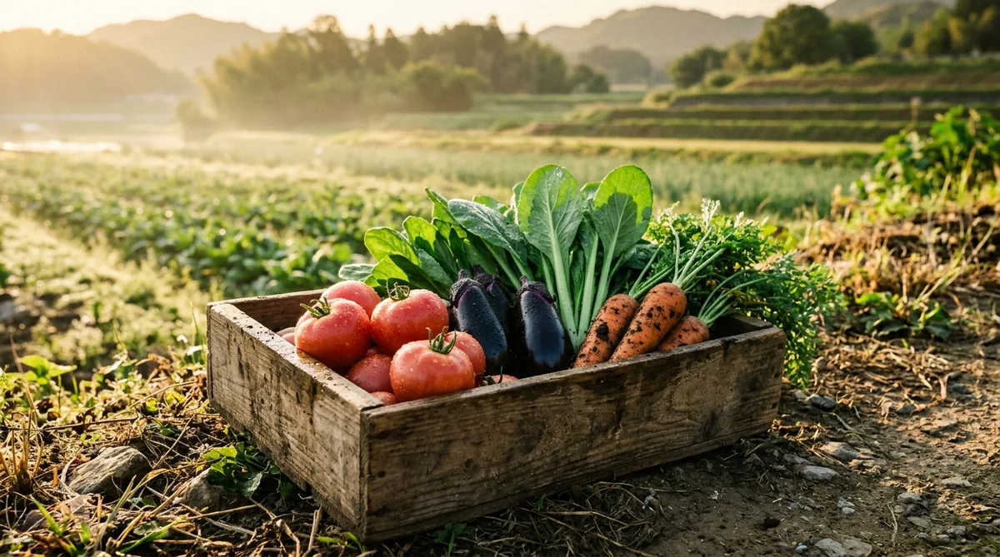
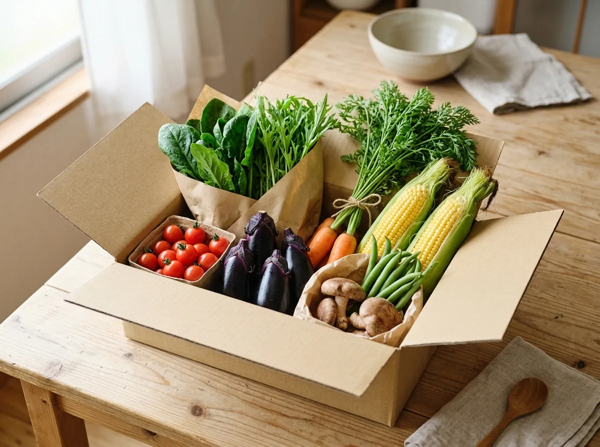

「トマトの匂いで箱を開けた瞬間から笑顔に」
スーパーの野菜をあまり食べなかった4歳の息子が、同封のレシピ通りに蒸し焼きにした春キャベツを「甘い！」とおかわりしました。泥つき人参も香りが別格です。
東京都世田谷区・S様（Sサイズご利用）

スーパーの流通を通すと、どうしても収穫から3〜4日かかります。あさひの畑では、朝露が残る午前6時に完熟を見極めて収穫し、その日のうちにクール便で発送します。

WEEKLY DIRECT BOX
その週にいちばん甘みが乗った旬野菜を厳選。保存のコツと簡単レシピを書いた「畑のお便り」を同梱します。
SEASONAL HARVEST
雪解け水を含んだ柔らかな春野菜が次々と顔をだす季節。生でシャキッと味わえる品目が増えます。
新玉ねぎは薄切りにして鰹節とポン酢だけで甘みが際立ちます。春キャベツはオリーブオイルと塩でさっと蒸し焼きに。
市場流通のように早採りせず、樹上で赤く甘みが乗り切ったタイミングで収穫するため、野菜本来の濃い味が楽しめます。
里山の落ち葉と米ぬかを二年間じっくり発酵させた堆肥を使用。皮ごと安心して食べられる健やかな土を育てています。
少し曲がったきゅうりや大小ふぞろいの人参も味は同じ。フードロスを減らしながら、たっぷりお届けします。
FARMER'S NOTE
あさひの畑がある長野県伊那谷は、南アルプスと中央アルプスに挟まれた自然豊かな盆地です。昼は太陽をたっぷり浴び、夜はぐっと冷え込むため、野菜が自ら身を守ろうとして糖分を蓄え、濃い甘みが生まれます。
農薬や化学肥料に頼らず、秋に集めた広葉樹の落ち葉と地元精米所の米ぬかを二年かけて発酵させた自家製堆肥で土を育てています。虫食いの跡が少し残ることもありますが、それは子どもたちが安心して皮ごと食べられる証です。
VOICES FROM THE TABLE
スーパーの野菜をあまり食べなかった4歳の息子が、同封のレシピ通りに蒸し焼きにした春キャベツを「甘い！」とおかわりしました。泥つき人参も香りが別格です。
東京都世田谷区・S様（Sサイズご利用）
普段自分では手に取らない珍しい旬野菜が入っていても、保存法と5分で作れる調理メモが付いているので無駄になりません。火曜日の到着が毎週の楽しみです。
愛知県名古屋市・K様（Mサイズご利用）
最初は1回だけのお試しつもりでしたが、朝のサラダのシャキシャキ感に驚いて、今では月2回のペースで頼んでいます。実家への贈り物にも喜ばれました。
大阪府吹田市・T様（Sサイズご利用）
SHIPPING & GUIDE
鮮度を保つため、4月〜11月はクール冷蔵便でお届けします（初回お試しは全国送料無料）。
| お届け地域 | 到着目安 | 通常送料（2回目以降） |
|---|---|---|
| 関東・甲信越・中部・関西 | 発送日の翌日午前〜 | ¥680（税込） |
| 東北・中国・四国 | 発送日の翌日午後〜 | ¥780（税込） |
| 北海道・九州 | 発送日の翌々日午前〜 | ¥980（税込） |
Q&A
はい、ご注文時の備考欄に「セロリ・パクチーは苦手」など2品目までご記入いただければ、別の旬野菜へ差し替えて箱詰めします。
毎週火曜・金曜の発送に合わせて、翌日以降のお届け時間帯（午前中・14〜16時・16〜18時・18〜20時・19〜21時）をご指定いただけます。
いいえ、1回きりのお届けです。自動更新や勧誘のお電話は一切ありませんので、安心してお味をお確かめください。
農薬不使用栽培のため、丁寧に検品・水洗いしておりますが、まれに小さな土粒が残る場合があります。葉物は調理前にさっと水洗いしてお召し上がりください。
定期購入への自動移行はありません。今週の火曜・金曜収穫分からクール便でお届けします。